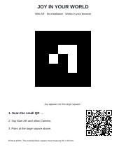

Entirely web-based. No installation. Print this card, scan the small QR with your phone camera, and open the link in Chrome. Tap Start AR, allow Camera, and point at the large black square. Joy appears on that square.
Print at 100% / Actual size on matte white A4 paper. Disable Fit to page and printer headers/footers. Measure the outside black square: 80 × 80 mm. Keep its white border clear.

The QR opens the website. The large barcode provides continuous position and rotation tracking. They are on the same card. Hold the phone about 35–60 cm away with the large square’s corners visible.
Open Web AR directly · Marker only · QR only · Credits